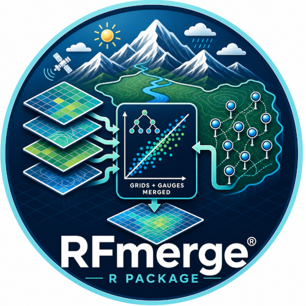

RFmerge is an R package for precipitation merging, environmental data fusion, bias correction of gridded datasets, and Random Forest-based spatio-temporal prediction using rain gauges, satellite products, reanalysis data, topography, and Euclidean-distance covariates.


Description
RFmerge is an R package for merging gridded environmental products with ground-based observations to generate spatially consistent, analysis-ready datasets. It implements the Random Forest-based MErging Procedure (RF-MEP), a machine-learning framework introduced by Báez-Villanueva et al. (2020) to improve the spatio-temporal representation of precipitation by combining rain-gauge measurements, multiple gridded products, and topography-related predictors within a unified Random Forest model.
The methodological motivation is straightforward: no single source fully characterises environmental variability. Ground stations provide high-quality point measurements but sparse spatial coverage, whereas satellite, reanalysis, and other gridded products provide spatial continuity but often exhibit systematic bias, missed events, and scale-dependent errors. RFmerge exploits the complementary information contained in these sources to produce merged fields that better represent spatial patterns, temporal dynamics, and event occurrence, with particular value in complex terrain and data-scarce regions.
In RF-MEP, a separate Random Forest model is fitted at each time step using station observations as the response variable and gridded covariates as predictors. These covariates may include satellite or reanalysis products, digital elevation models, and Euclidean-distance layers that account for proximity to observation sites. This design allows RFmerge to capture non-linear relations between precipitation and environmental controls while preserving flexibility across daily, monthly, seasonal, or annual applications.
The approach was originally developed and evaluated for precipitation merging, where RFmerge outperformed the individual input products, alternative merging methods, and, in most cases, the benchmark merged dataset MSWEPv2.2 across multiple temporal scales. The same framework can also be adapted to other environmental variables when quality-controlled ground observations and suitable gridded covariates are available.
For hydrology, climatology, remote sensing, and water-resources research, RFmerge provides a reproducible and extensible workflow for bias-aware environmental data fusion. It is especially useful for researchers seeking improved gridded datasets for hydrological modelling, climate diagnostics, hazard analysis, and environmental monitoring.

Installation
Installing the latest stable version from CRAN:
install.packages("RFmerge")Alternatively, you can also try the under-development version from Github:
if (!require(devtools)) install.packages("devtools")
library(devtools)
install_github("hzambran/RFmerge")A simple first application:
Loading times series of ground observations:
data(ValparaisoPPts)
data(ValparaisoPPgis) Loading a shapefile with the location and metadata of ground observations:
ValparaisoSHP.fname <- system.file("extdata/ValparaisoSHP.shp",package="RFmerge")
ValparaisoSHP <- terra::vect(ValparaisoSHP.fname)Loading satellite-based datasets:
chirps.fname <- system.file("extdata/CHIRPS5km.tif" ,package="RFmerge")
prsnncdr.fname <- system.file("extdata/PERSIANNcdr5km.tif" ,package="RFmerge")
dem.fname <- system.file("extdata/ValparaisoDEM5km.tif",package="RFmerge")
CHIRPS5km <- terra::rast(chirps.fname)
PERSIANNcdr5km <- terra::rast(prsnncdr.fname)
ValparaisoDEM5km <- terra::rast(dem.fname) Spatial metadata
In order to use the spatial information stored in ValparaisoPPgis, we first need to convert it into a SpatialPointsDataFrame, using the latitude and longitude fields, stored in the lat and lon columns:
stations <- ValparaisoPPgis
stations <- terra::vect(stations, geom=c("lon", "lat"), crs="epsg:4326")Reprojecting input datsets
Reprojecting the input datsets from geographic coordinates into WGS 84 / UTM zone 19S (EPSG:32719):
utmz19s.p4s <- "epsg:32719" # WGS 84 / UTM zone 19S
CHIRPS5km.utm <- terra::project(x=CHIRPS5km , y=utmz19s.p4s)
PERSIANNcdr5km.utm <- terra::project(x=PERSIANNcdr5km , y=utmz19s.p4s)
ValparaisoDEM5km.utm <- terra::project(x=ValparaisoDEM5km, y=utmz19s.p4s)
stations.utm <- terra::project(x=stations, y=utmz19s.p4s)
ValparaisoSHP.utm <- terra::project(ValparaisoSHP, y=utmz19s.p4s)Creating a new data.frame with the expected metadata, i.e., at least, ID, lat, lon:
id <- stations.utm[["Code"]][,1]
st.coords <- terra::crds(stations.utm)
lon <- st.coords[, "x"]
lat <- st.coords[, "y"]
ValparaisoPPgis.utm <- data.frame(ID=id, lon=lon, lat=lat)Covariates
Raster covariates to be used in RFmerge:
covariates.utm <- list(chirps=CHIRPS5km.utm, persianncdr=PERSIANNcdr5km.utm,
dem=ValparaisoDEM5km.utm)Running RFmerge
Runing RFmerge with parallelisation in GNU/Linux machines:
drty.out <- "~/Test.par"
rfmep <- RFmerge(x=ValparaisoPPts, metadata=ValparaisoPPgis.utm, cov=covariates.utm,
id="ID", lat="lat", lon="lon", mask=ValparaisoSHP.utm,
training=0.8, write2disk=TRUE, drty.out=drty.out)Reporting bugs, requesting new features
If you find an error in some function, or want to report a typo in the documentation, or to request a new feature (and wish it be implemented :) you can do it here
Citation
citation("RFmerge")To cite RFmerge in publications use:
- RSE article:
Baez-Villanueva, O. M.; Zambrano-Bigiarini, M.; Beck, H.; McNamara, I.; Ribbe, L.; Nauditt, A.; Birkel, C.; Verbist, K.; Giraldo-Osorio, J.D.; Thinh, N.X. (2020). RF-MEP: a novel Random Forest method for merging gridded precipitation products and ground-based measurements, Remote Sensing of Environment, 239, 111610. doi:10.1016/j.rse.2019.111606.
- R package: > Zambrano-Bigiarini, M.; Baez-Villanueva, O.M., Giraldo-Osorio, J. (2026) RFmerge: Merging of Satellite Datasets with Ground Observations using Random Forests. R package version 0.3-0. URL https://hzambran.github.io/RFmerge/. doi:10.32614/CRAN.package.RFmerge.
BibTeX entries for LaTeX users are:
- RSE article:
@Article{BaezVillanueva+al2020-RFmerge_article, title = {RF-MEP: a novel Random Forest method for merging gridded precipitation products and ground-based measurements}, journal = {Remote Sensing of Environment}, author = {Baez-Villanueva, O. M. and Zambrano-Bigiarini, M. and Beck, H. and McNamara, I. and Ribbe, L. and Nauditt, A. Birkel, C. and Verbist, K. and Giraldo-Osorio, J.D. and Thinh, N.X.}, year = {2020}, volume = {239}, doi=“10.1016/j.rse.2019.111606”, url=“https://doi.org/10.1016/j.rse.2019.111606”, pages = {111606} }
- R package:
@Manual{Zambrano-Bigiarini+al2020-RFmerge_pkg, title = {RFmerge: Merging of Satellite Datasets with Ground Observations using Random Forests}, author = {Zambrano-Bigiarini, M. and Baez-Villanueva, O.M. and Giraldo-Osorio, J.}, year = “2026”, note = {R package version 0.3-0. doi:10.32614/CRAN.package.RFmerge}, url = “https://CRAN.R-project.org/package=RFmerge” }
Vignette
Here you can find an introductory vignette showing the use of RFmege to create an improved precipitation dataset by combining the satellite-based CHIRPSv2 and PERSIANN-CDR precipitation products, elevations from a DEM and rainfall observations recorded in rain gauges.
Related Material
- A novel methodology for merging different gridded precipitation products and ground-based measurements (EGU-2019) abstract. EGU General Assembly 2019. Wien, Austria. (oral presentation). HS7.2 Precipitation Modelling: uncertainty, variability, assimilation, ensemble simulation and downscaling. Abstract EGU2019-10659